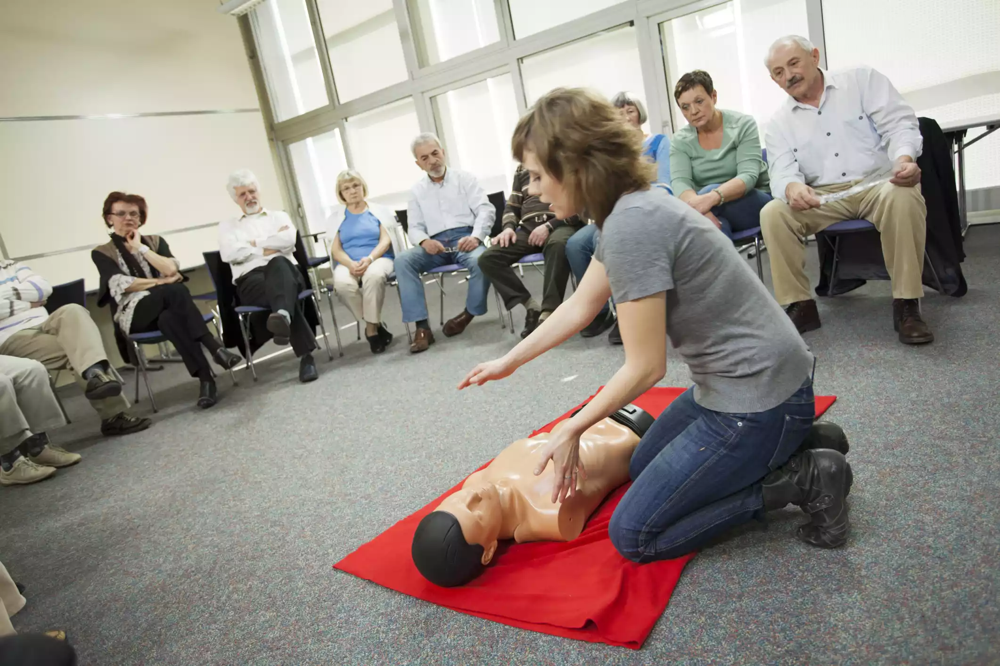

How To Do CPR
Published on 14th of March, 2019 By Jean Miller
There is no substitute for learning cardiopulmonary resuscitation (CPR), but emergencies don't wait for training.
Continue readingThere is no substitute for learning cardiopulmonary resuscitation (CPR), but emergencies don't wait for training.
Continue reading
Should I check for a pulse or not before giving CPR?
Continue readingYou've called 911. Now what? Who's going to walk in the door and how long will it take for them to get there? Is there anything you need to do before help arrives?
Continue reading